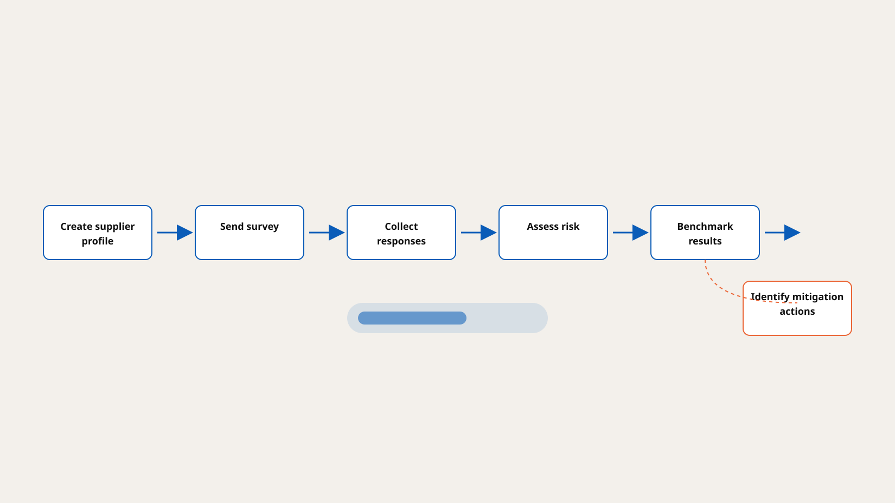

Maxsight needed a configurable survey experience for the Forced Labour Risk Assessment. I designed the core product screens and the end-to-end supplier-survey flow that made it possible.
The difficult part was collecting detailed supplier information without making the survey feel like a chore. I designed the question flow, progress states and reusable interaction patterns from scratch, so the experience could be customised while still feeling consistent within Maxsight.
This case study uses public product information and simplified descriptions of my contribution. It does not include production screens, customer data or proprietary methodology.
The challenge
Organisations need to assess forced-labour exposure across supplier networks that can span different countries, sectors and operating models. The product needed to help teams create supplier profiles within Maxsight, gather structured information directly from suppliers, and turn responses into inputs for a wider due-diligence view.
Generic form tools could not support the required configuration or Maxsight integration, so the team built a bespoke survey capability from the ground up.

Designing the journey
I structured the experience around a clear journey: create supplier profile → send survey → collect responses → assess risk → benchmark results → identify mitigation actions.
This gave the product team a shared understanding of the workflow, while keeping individual tasks focused for the people using it day to day.
A bespoke survey capability
The survey experience had to balance two competing needs: gathering detailed, structured information and keeping completion clear and approachable.
I designed the interaction model from scratch — question flow, progress states and reusable interface patterns — so the patterns could support customisation while remaining consistent within Maxsight.
From information to action
The assessment evaluates exposure across country, industry and business-practice factors. My design work focused on making the data-collection stage understandable and purposeful, so the information gathered through the survey could feed a meaningful wider view.
The goal was not simply to collect more data. It was to support a workflow that helps organisations understand where attention and mitigation may be needed.
Outcome
The work created a custom survey foundation within Maxsight and turned a complex research-led methodology into a product flow users could work through.
It gave organisations a clearer way to collect supplier information, assess potential exposure and identify where further investigation or mitigation may be needed.
The Forced Labor Risk Assessment launched in 2025 through a collaboration between Moody's and the University of Nottingham's Rights Lab — combining Rights Lab research and scoring methods with Moody's technology.